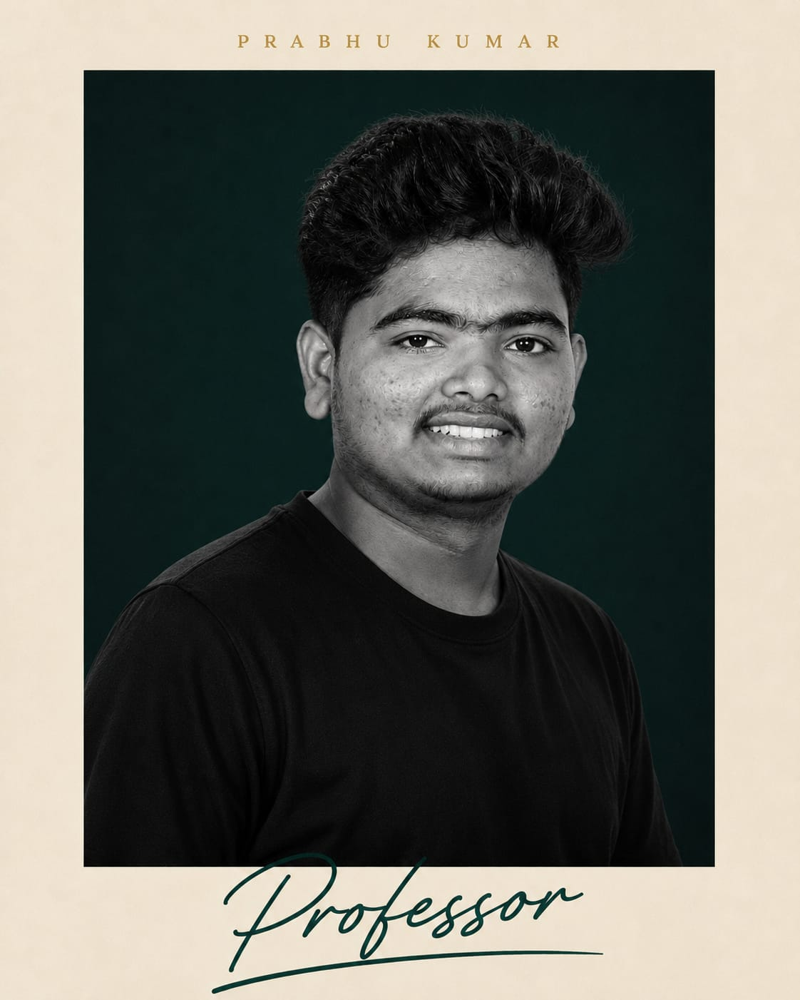

Prabhu kumar naik
Front-end DeveloperHi! I'm a passionate web development student who enjoys turning ideas into clean, responsive, and user-friendly websites. I'm constantly learning new technologies and improving my skills through hands-on projects and continuous practice. My primary focus is front-end web development using HTML, CSS, and JavaScript, while expanding my knowledge of modern tools and frameworks. I enjoy solving problems, building interactive user experiences, and writing code that is both efficient and maintainable. My goal is to build a strong personal brand by showcasing meaningful projects, sharing my learning journey, and growing as a professional developer. I believe that consistent learning, creativity, and attention to detail are the keys to creating impactful digital experiences. I'm always excited to take on new challenges, collaborate with others, and continue developing my skills. Thank you for visiting my portfolio—I hope you enjoy exploring my work!